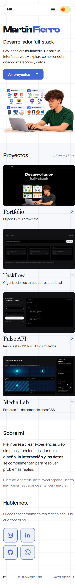
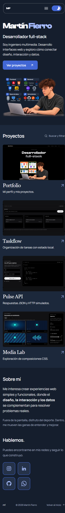

Bocetos elaborados a partir de la revisión con Playwright y los criterios de design-taste-frontend. Conservan tus fuentes, la ilustración original, la cabecera, el interruptor y el blanco cuadriculado.
Los cambios están únicamente en estas propuestas visuales. El portfolio de la aplicación conserva su estado anterior.
La opción más cercana a tu distribución actual.
La misma portada con cuatro proyectos de igual peso y capturas más grandes en escritorio.
Ambas propuestas usan esta disposición de una columna en móvil.

